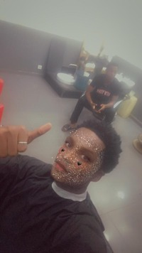
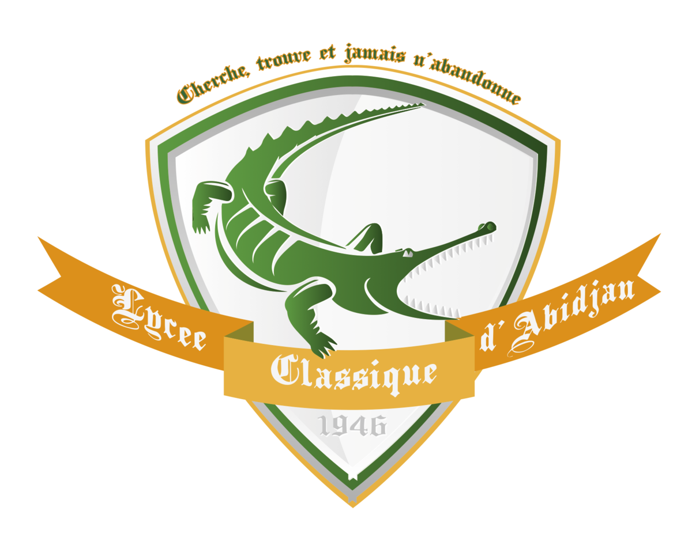

à propos

Je m'appelle Kouéyou Laurent Désiré, j'ai 21 ans et je suis étudiant. J'ai une passion pour les jeux vidéo et les animés. J'adore explorer des mondes virtuels, résoudre des énigmes et rencontrer de nouveaux personnages dans les jeux vidéo. En ce qui concerne les animés, j'apprécie les histoires fascinantes, les personnages complexes et les mondes imaginaires qu'ils offrent.
En tant qu'étudiant, je suis déterminé à acquérir de nouvelles connaissances et compétences pour réussir dans ma carrière future. Mon intérêt pour les jeux vidéo m'a même conduit à envisager des opportunités liées à cette industrie, que ce soit dans le développement de jeux, la conception graphique ou la narration.
travail
Je suis un étudiant passionné qui vient de valider il n'y a pas si longtemps que ça sa licence en informatique à l'institut universitaire d'Abidjan (IUA). Au cours de mes études, j'ai acquis des compétences solides dans des matières telles que l'HTML, le CSS, le JAVASCRIPT, ainsi qu'une expérience précieuse dans la création totale d'un site web. Mon parcours académique m'a permis de développer des compétences essentielles, notamment la recherche, la résolution de problèmes et la collaboration.
Maintenant que j'ai validé ma licence, je suis déterminé à continuer à élargir mes compétences et à relever de nouveaux défis passionnants. Mon objectif est de devenir un web-designer doté d'une créativitée hors du commun !
CV
mon parcours scolaire a été marqué par la diversité des établissements que j'ai fréquentés. Voici un aperçu de mon cheminement éducatif :
- Primaire : EPV St Etienne
- Collège : Groupe Scolaire International Safak
- Secondaire : Lycée Classique d'Abidjan (LCA)
- Licence : Institut universitaire d'Abidjan (IUA)
J'ai débuté ma scolarité à l'école primaire EPV St Etienne. C'est là que j'ai posé mes premiers pas dans le monde de l'éducation, apprenant les bases fondamentales qui ont jeté les fondations de mon parcours académique.
Pour le collège, j'ai intégré le GSI safak, une école ivoiro-turque où j'ai continué à développer mes connaissances et à explorer de nouveaux domaines d'apprentissage. J'y ais appris la langue turque également, même si maintenant je ne sais plus là parler... Ces années de collège m'ont aidé à définir mes intérêts académiques.
Mon passage au LCA, ce lycée légendaire connu pour sa difficulté, a marqué une étape cruciale de mon parcours. C'est là que j'ai renforcé mes compétences dans des matières spécifiques et que j'ai commencé à me préparer pour l'enseignement supérieur.
Après avoir obtenu mon diplôme de lycée, j'ai rejoint l'IUA pour poursuivre mes études supérieures. C'est là que j'ai récemment validé ma licence en informatique, démontrant mon engagement envers l'acquisition de compétences avancées et de connaissances spécialisées.

Mon parcours scolaire diversifié m'a permis d'acquérir une variété d'expériences éducatives, de rencontrer des personnes différentes et de m'adapter à des environnements variés. Ces expériences ont enrichi mon parcours, développé ma capacité d'adaptation et renforcé mon désir d'apprendre.